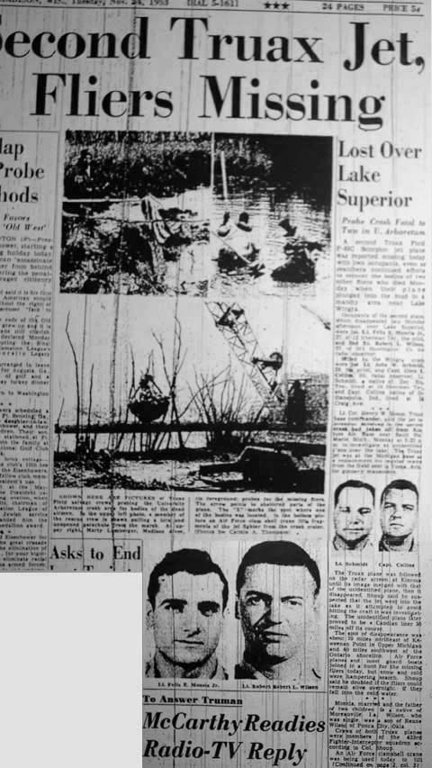

Capital Times de Madison (WI, on Tuesday, November 24, 1953.
| Home > Enquête > Dossiers > Kinross |
|---|
|  |
Un 2nd avion à réaction F-89C Scorpion du terrain de Truax a été signalé manquant aujourd'hui avec ses 2 occupants, even as searchers continued efforts to recover the bodies of two other fliers who died Monday when their plane plunged into the mud in a marshy area near Lake Wingra.
Les occupants du 2nd avion, qui disparut lundi après-midi au-dessus du Lac Supérieur, étaient le 1st lieutenant Felix E. Moncla, Jr., 27 ans, de 12 Sherman Ter., le pilote, et le 2nd lieutenant Robert L. Wilson, 22 ans, de 301 Huntington Ct. l'observateur radar.
Tués dans le crash de Wingra furent le 1er lieutenant John W. Schmidt, 28 ans, le pilote, et le capitaine Glen E. Collins, 30 ans, observateur radar. Lt. Schmidt, un natif de Del Rio (Texas), vivait à 10 Sherman Ter., et le capitaine Collins, natif de Indianapolis (Indiana), vivait à 24 Craig Avenue.
Le lieutenant-colonel Henry W. Shoup, commandant de la base de Truax, dit que le jet intercepteur impliqué dans le 2nd crash avait décollé de la base aérienne de Kinross près de Sault Ste. Marie (Michigan), lundi à 17 h 22 pour investiguer sur un avion non-identifié au-dessus du lac. Le jet de Truax se trouvait à la base du Michigan en remplacement des équipes normales from the field sent to Yuma, Ariz. for gunnery maneuvers.
Le point de disparition se trouvait à 70 miles environ au nord-est de Keweenan Point dans le haut du Michigan à 40 miles au sud-est de la côte de l'Ontario. Les avions de l'Air Force et la plupart des bateaux des gardes-côtes ont rejoint une chasse aux aviateurs manquants aujourd'hui, mais la neige et le froid entravaient la recherche. Shoup dit qu'il doutait que les aviateurs puissent rester en vie toute la nuit s'ils étaient tombés dans l'eau froide.
Moncla, marrié et père de 2 enfants est un natif de Moreauville en Lousiane. Wilson, qui était célibataire, était le fils de Renne Wilson de Ponca City, en Oklahoma.
Les équipages des 2 avions de Truax faisaient partie du 433ème escadron de chasseurs intercepteurs selon le colonel Shoup.
Une grue clamshell de l'Air Force a été utilisée aujourd'hui pour soulever l'épave du Scorpion écrasé dans le trou rempli de boue de l'Université d'Arboretum dans une tentative pour trouver les corps de Schmidt et Collins.
Le colonel Shoup a déclaré être convaincu que les hommes avaient les hommes had stuck with their plane dans une tentative pour keep it crashing into densely-occupied areas de Madison. Il remerciait la coopération de la police, des pompiers, des membres de la presse et de la radio et de tous les autres dans la tentative pour retrouver les hommes.
Il ajouta qu'un effort de toutes parts sera fait pour pour récupérer tout morceau de l'épave afin de les présenter à une commission d'enquête d'experts de sorte que la cause de ce malheur puisse être déterminée.
L'épave était éparpillée sur une large zone, some of it blown into Lake Wingra by an explosion which ripped the ship immediately after it plunged into the marsh. A salvage crew from Truax Field used a boat on the lake today in search for debris.
Officials were inclined to believe that a sudden mechanical failure caused the crash and the two occupants of the plane had no opportunity to radio that they were in distress or to bail out of the speeding craft.
The plane, aloft on a routine training flight, sped northwesterly across the southern outskirts of Madison, and crashed into the marsh at the edge of Lake Wingra and about one fourth mile west of the bridge across Murphy's Creek at the end of South Mills street.
The explosion hurled mud and plane parts over trees, broke upper limbs of some trees, shook buildings in the area, and cracked a storm window in one home in the vicinity.
Police and firemen sped to the scene to aid Truax Field rescue squads and airmen volunteers from the field in attempts to recover the bodies of the fliers and the wreckage of the plane.
Shortly after the crash site was located, two torn but unopened parachutes were fished from the marsh with pike poles.
Numerous persons witnessed the F-89C Scorpion jet. They heard the roar of the low-flying plane, then saw it tip downward. The plunge was followed by an explosion which tore a huge hole in the marsh and sent mud and plane parts flying into the air.
Among those reporting seeing the crash of hearing the explosion are Mrs. Warren Young, 2201 Woodland Way; Mrs. Pauline Adams, 2401 Balden St., in whose home a window was cracked; R. A. Scheiber, 5404 Pleasant Hill Rd.; Mrs. Donald Alme, 920 Dane St.; Mrs. Juanita Gray, Syene Road; George Parks, 309 Russell St.; Andrew Grosse, Route 1, Cross Plains; David Welch, 2027 Madison St.; Lloyd R. Burr, 937 Dane St.; and Atty. John Riley, 1526 Vilas Ave.
The hole gouged out by the exploding plane is about 50 feet in diameter and about 10 feet deep.
Workers in rubber suits entered the muddy pond to search for the bodies and wreckage. They were aided by Martin Lemberger, 513 S. Brooks St., former Navy diver.
| Home > Enquête > Dossiers > Kinross |
|---|